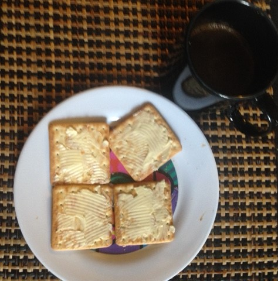

Awesome Egg Sandwich
Description
Welcome to the intriguing and peculiar world of the buttered saltine crackers with Coffe, a dish that defies all known culinary conventions. Imagine the audacious combination of an extremely dry biscuit with the tempting creaminess of butter and the invigorating energy of coffee.
Ingredients
- Saltine crackers
- butter
- Coffee
Steps
- Find a cream cracker, that little biscuit that's so dry it feels like it was born in the Sahara Desert. It will be the base of this culinary creation.
- Grab a knife, but be careful not to cut yourself. Take a generous portion of butter. Oh, and make sure not to drop half the butter on the floor. The floor doesn't need butter, believe me.
- Spread the butter on your saltine cracker slice as carefully and lovingly as a painter creating a masterpiece. It's important to cover the entire surface because you don't want parts of the biscuit to get jealous of the others, right?
- Now, to add a special touch, grab a cup of hot coffee. Let the delicious aroma envelop you and take a moment to appreciate it. After all, who doesn't love a good cup of coffee?
- And voilà! Now you can savor your incredible creation: a cream cracker with butter and a hint of coffee. The final result is a perfect balance between the biscuit's crunchiness, the creaminess of the butter, and the unique flavor of coffee. This peculiar combination can only be enjoyed by true culinary adventurers.